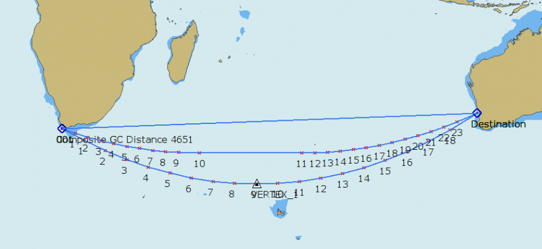
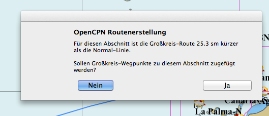
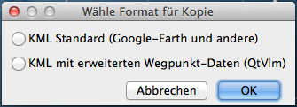
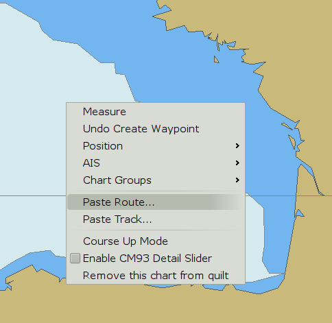
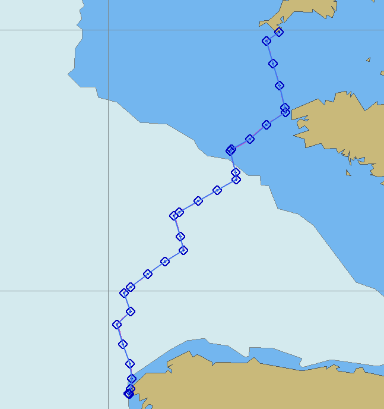
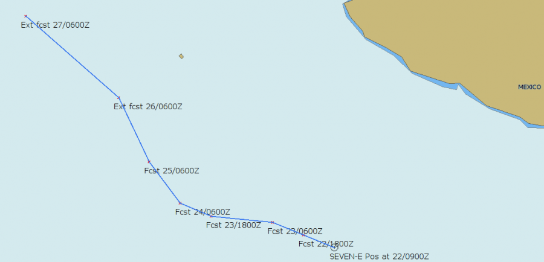

Planung von Daten
Die hier gezeigten Beispiele sind auch für den Import als Layer geeignet, um so das versehentliche Löschen von Wegpunkten zu unterbinden.
Erzeugen und Importieren von Großkreis Routen
Der GPX Import kann für viele Dinge verwendet werden, drei Beispiele folgen unten. Betrachten Sie erst dieses Bild. Planung eines Trips von Kapstadt nach Freemantle.

Hier sind zwei importierte Routen, die südliche Route ist ein echter Großkreis, die mittlere Route ist ein zusammengesetzter Großkreis und dann die
normale Loxodrome weiter nördlich.
Ein Großkreis ist die kürzester Verbindung zweier Punkte auf dem Globus. Eine zusammengesetzte Route ist das Gleiche mit zusätzlichen Bedingungen, um
unterhalb einer begrenzten Breite zu bleiben, in diesem Fall 39°30'S. Eine Loxodrome ist eine gerade Linie auf einer Mercator Karte. Die Mercator Projektion ist
der Standard für OpenCPN.
Vergleichen wir die entsprechenden zugehörigen Distanzen.
Damit ist der Vorteil des Großkreises offensichtlich. Die Nachteile sind in diesem Fall vielfältig.
Kälteres Wetter, stärkere Winde, höherer Seegang und vielleicht sogar Eisberge. Der Großkreis ist nur ein Planungs-Faktor bei der Planung einer
Route. Das Wetter ist in den meisten Fällen der entscheidende Faktor.
Eine Großkreis Route kann mit dem "gc" Ruby Script für alle Plattformen erzeugt werden.
Zur Erzeugung einer GPX Datei mit Großkreis geben Sie die Abfahrtsdaten Breite & Länge gefolgt von den Zieldaten Breite & Länge und optional eine
begrenzende Breite für eine zusammengesetzte Route ein sowie die Distanz in Länge zwischen den Wegpunkten, Grundwert ist 5°.
Großkreis-Werkzeug in neuerer OpenCPN Version
In der neuen OpenCPN Version wurden nun zwei Großkreis-Funktionen hinzugefügt, so daß der oben geschilderte Umweg nicht mehr nötig ist.
Das ist zum Einen das Meßwerkzeug mit dem Rechtsklick-Menü und zum Anderen der Punkt "Erzeuge Route" von der Werkzeugleiste. Beide Funktionen werden verfügbar,
wenn es um große Entfernungen in Ost-West-Richtung und entfernt vom Äquator geht und der Unterschied zwischen normaler Route und Großkreis mehr als
2 Seemeilen ist. Das sind zwischen 0,2% bis 0,5% der Gesamt-Entfernung, abhängig von Breitengrad und Richtung. Unter diesen Bedingungen erscheint eine Kurve zu
den Polen
Meßwerkzeug
Test des Meßwerkzeugs für Manila nach San Francisco (ungefähr). Zur Illustration des Großkreises nehmen Sie einen zweiten Punkt gegenüber des ersten auf dem Globus und bewegen ihn langsam.
Der erste Meß-Abschnitt wird zur Vereinfachung als normale Route geplottet. Der aktive Abschnitt wird als Großkreis angezeigt, wenn er lang genug ist. Die angezeigte Entfernung ist die kombinierte Großkreis-Distanz.
Das "Erzeuge Route" Werkzeug

Antwort Nein erzeugt eine normale Route für diesen Abschnitt. Mit Antwort Ja kommt die Großkreis-Option ins Spiel und es wird eine Anzahl von Zwischen-Wegpunkten erzeugt. Es sind mindestens 3 Wegpunkte. Die genaue Anzahl wird von OpenCPN berechnet und paßt für die meisten Fälle.
Die erzeugte Route ist nun als übliche Route im Routenmanager verfügbar.
Als echtes Beispiel hier eine Route von Mossel Baai Südafrika zum westlichen Eingang der Investigator Strait Südaustralien. Die normale Route ist 5660 Seemeilen und die Großkreis-Route, wie ungefähr erzeugt, 5249 Seemeilen und damit etwa 411 Meilen kürzer.
Komposit-Segeln
Komposit-Segeln ist Großkreis-Segeln mit einer maximal erlaubten Breite. OpenCPN hat keine solche eingebaute Funktion, aber es ist leicht, sie zu machen. Oben ist die gleiche Route wie vorher, aber nicht weiter südlich gehend als 45°S Breite. Man startet also eine Route bei Mossel Baai und erweitert sie bis 45°S zur Tangente des sichtbaren Großkreises. Beende die Route.
Machen Sie das Gleiche mit Start am Ziel und gehen Sie zurück. Erzeugen Sie eine normale Route mit den beiden Punkten bei 45°S. Die drei Routen zusammen sind die Komposit-Route. Die Gesamt-Entfernung der Komposit-Route ist 5293 Seemeilen.
Routen-Plugin von SaltyPaws
Dieses Plugin hat einige Funktionen, die das eingebaute Werkzeug nicht hat. Es kann eine Komposit-Route berechnen und die Distanz zwischen den Wegpunkten kann vom Anwender angegeben werden. Das Ergebnis ist jedoch eine zu exportiende "gpx" Datei, die vom Routenmanager in OpenCPN zu importieren ist.
Ein Großkreis von der Cook Strait nach Cape Horn begrenzt auf 60° S.
Routen nach Wetterlage
OpenCPN kann optimierte Routen vom freien OpenSource Programm QtVlm importieren. Lernen Sie zunächst QtVlm kennen, bevor Sie es verwenden, da viele Dinge unterschiedlich sind
zu OpenCPN. Laden Sie QtVlm herunter von hier und lesen Sie die Dokumentation dazu.
OpenCPN Routen können auch nach QtVlm exportiert werden.

Wurde eine Route erzeugt, ist die Option "Kopiere..." im Rechtsklick-Menü vorhanden. Mit Klick darauf erscheint der Optionen-Dialog.
Bevor Sie fortfahren, stellen Sie sicher, daß Sie wirklich Grib Dateien verstanden haben, was das sind und was ihre Grenzen sind. Siehe dazu auch das Grib-Plugin.
Nehmen wir ein Beispiel mit einer importierten Route, optimiert von QtVlm. Es ist eine Situation, die die Meisten vermeiden möchten: Querung der Biskaya mit einem aktiven Atlantik-Tief
westlich der britischen Inseln. Der beschäftigte und zeitlich gezwungene Skipper möchte die beste Route von Lizard Point nach Cap Finistere finden. Er verwendet QtVlm, um
eine Route mit weniger als 30 Knoten Wind zu finden. Unten ist die optimierte QtVlm Route auf der Basis der letzten verfügbaren Grib Datei. Beachten Sie, daß QtVlm nichts
über Tidenströme, lokale Böen oder den Zustand der Crew weiß. Es gibt weitere Gründe, warum die endgültige Route in der Verantwortung des Skippers liegt.
Rechtsklick auf die Route und Export im KML Format.
Öffnen Sie OpenCPN und dann Rechtsklick und "Route einfügen" (Paste Route).

Das sieht nicht schön aus, Route und alle Wegpunkte wurden exportiert.
Wir möchten es besser haben.
Eine Alternative ist, QtVlm mit (Edit Route) "Simplify" die Route vor dem Kopieren zu vereinfachen.
Eine weitere Alternative ist, zunächst die "Track einfügen" Option zu verwenden.
*Beachten Sie, daß dies kein richtiger Track ist. Es ist nur ein anderer Weg, eine Route zu exportieren, möglich durch das KML Format. Ein Track beschreibt, wo wir in der
Vergangenheit waren, während Route die Planung für die Zukunft ist. Import eines Tracks gibt einen "leicht-gewichtigen" Überblick über die vorgeschlagene Route.
Siehe dazu auch das Grib-Plugin.
Als nächstes öffnen Sie die Track Lasche in OpenCPNs Routen-Manager und drücken "Route von Track".

Sehr viel besser. Wir haben jetzt einen Track mit einer Route darüber, mit Rechtsklick kann der Track gelöscht werden. Weiterhin ist es sinnvoll, mit dem Grib Plugin die gleiche
Grib-Datei wie bei QtVlm anzuzeigen.
Das sind alles beeindruckend aus, aber es basiert immer noch nur auf einer Grib Datei. Somit ist es eine Computer-basierte Prognose, ohne menschliches Zutun. Es gelten weiterhin alle
Einschränkungen von Gribs. Ein an Bord kalibriertes Barometer ist ein guter Weg, um die Voraussage der Gribs zu überprüfen. Siehe dazu auch das Grib-Plugin.
Ein zutreffendes Polar-Diagramm ist ebenfalls wichtig. Das ist bei einem Rennboot Standard, aber nicht so gebräuchlich bei Fahrtenyachten. Hier spielen auch Faktoren wie "Komfort"
eine Rolle in den Möglichkeiten einer Fahrtenyacht.
Sollen einige Offshore Wetter Beobachtungen anzeigt werden?
NOAAs NDBC Site gibt Zugriff auf viele Offshore Beobachtungen von Bojen und weltweiten Schiffen.
Um diese Daten einfach zu visualisieren, transformiert das "ShipWxRep" Script einen begrenzten Satz aller verfügbaren Daten in GPX Wegpunkte. Wie oben zu sehen, ist das Format
"Windrichtung, Windgeschwindigkeit, Zeit der Beobachtung und Luftdruck". Das ist hilfreich zur Überprüfung von Grib Dateien, selbst wenn das beste Werkzeug in
diesem Zusammenhang ein kalibriertes digitales Barometer ist.
Plotten von Miami Tropical Forecast Hinweisen
Haben Sie nur Zugriff auf Internet mit geringer Bandbreite, dann ist dieses Script ein Weg zum Plotten beispielsweise einer Email mit den Vorhersage Hinweisen. In jedem Fall ist es eine gute Idee, die Vorhersage Daten eines tropischen Systems verfügbar zu haben in dem Gebiet, in dem Sie segeln und planen.

Downloaden Sie die Scripts hier. Zur Hilfe starten Sie jedes Script ohne Argumente.